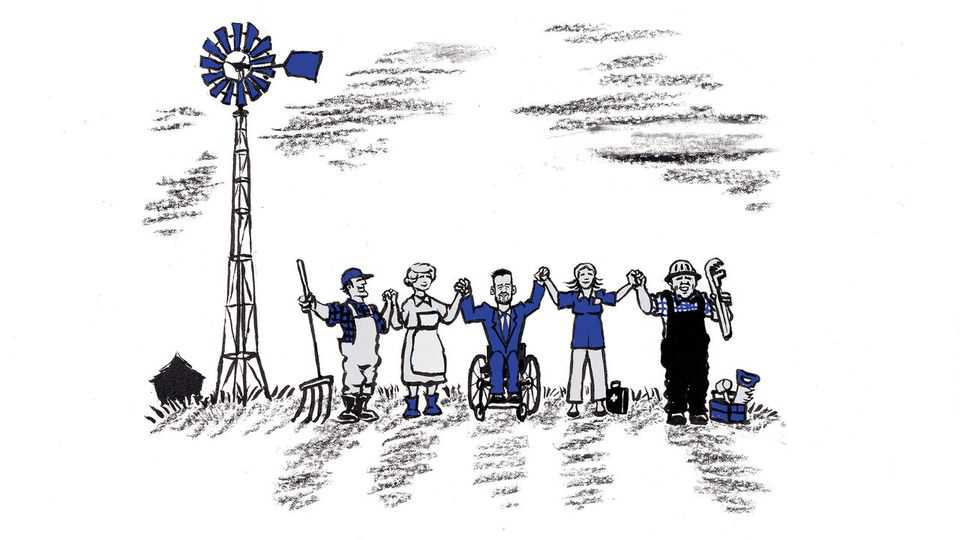

Democrats are rediscovering what an appealing politics of progress looks like
Their competitive candidates in states such as Iowa show how the party can avoid approaching doom

Oct 29th 2026
Ever since Senator Tom Harkin retired after five terms in 2015, his fellow Democrats in Iowa have fared poorly. Republicans took control of what had been a divided state government and a divided congressional delegation, and Donald Trump won Iowa three times, most recently by more than 13 points. Now a bit hard of hearing and frail at 86, Mr Harkin is back on the stump, to support Democratic candidates who are mounting surprisingly strong challenges up and down the ticket.
As elsewhere, a lot of the campaigning in Iowa has been stupid and awful. Record sums are being spent to jam the airways with advertisements making nasty, misleading claims. Mr Harkin’s presence is something of a tonic, and not only because he is as genial and plain-spoken as ever. When he introduces Josh Turek, who is campaigning for Mr Harkin’s old Senate seat, and Mr Turek pushes himself forward in his wheelchair to take the microphone, the exchange supplies a poignant reminder of the sort of thing all this politicking is supposed to be about.
Mr Harkin was the champion of the landmark civil-rights law banning discrimination against people with disabilities. Mr Turek, who was born with spina bifida, was 11 when that law, the Americans with Disabilities Act (ADA), passed in 1990. He calls Mr Harkin his political hero and says without the law, “every economic, every occupational, educational opportunity that I’ve been given would not have been there.” Like Mr Harkin himself, Mr Turek is quick to note something more. Mr Harkin counted on Republican allies to pass the bill. “It’s an amazing example of what we can do when we’re willing to work together,” Mr Turek says.
And that observation illuminates something else: that the struggle under way within the Democratic Party, which will probably grow more heated after the midterm elections, is not just a fight over policy between “progressives” and “moderates”. It is a contest between competing theories of how to make progress.
Mr Harkin is not surrendering the progressive label. He sees many of his differences with “my good friend” Bernie Sanders, the fiery leftist leader, as matters of style, even word-choice, not principle. He praises Mr Turek not only for having “a progressive agenda” but also for knowing “how to move it forward”. Mr Harkin does not note that Senator Sanders cannot point to any legislative achievement on the scale of the ADA.
Since Mr Harkin left the Senate, “progressive” has acquired a sharper edge. Mr Turek calls himself a moderate. Yet, like Mr Harkin, he also identifies as a prairie populist, in the tradition of the radical agrarian movement that united small farmers and trade unionists against the monopolistic powers of the Gilded Age. When Mr Turek talks about taxing billionaires, challenging big corporations and raising the minimum wage, he sounds no different from Abdul El-Sayed, who is running in Michigan and is the most prominent Senate candidate of the party’s populist left.
The candidates in Michigan and Iowa have important policy differences, though even those can blur. While Mr Turek says he opposes biological males competing in female sports, Dr El-Sayed has not taken a position, saying such decisions should be left to sports leagues. Unlike Mr Turek, Dr El-Sayed wants to abolish the Immigration and Customs Enforcement agency, yet he also says he supports applying immigration laws and securing the borders. Dr El-Sayed wants Medicare for All but says he would also back incremental expansions of public-health coverage favoured by Mr Turek. Dr El-Sayed wants to end military aid to Israel; Mr Turek would impose strict restrictions on such aid.
But their differences of style are stark. Dr El-Sayed has a combative, impatient approach, including to Democrats. He told donors he could intimidate Democrats who differ with him by putting “one ogre on a pike”, a reference to Senator John Fetterman of Pennsylvania. Mr Turek recoils from fighting even with Republicans. Dr El-Sayed has said Mr Trump should be impeached. Mr Turek has “no interest” in that. “We gotta get back to country over party,” he has said. Representative Alexandria Ocasio-Cortez, Mr Sanders’s likeliest heir, recently said a win by Dr El-Sayed would prove “anybody can win anywhere”. That is not so. Like Mr Turek, Dr El-Sayed is in a close race and may lose. But Michigan, where Democrats hold the governor’s office and both Senate seats, should have been less of a challenge.
The more inclusive style, rather than the combative one, has helped make Democrats competitive again this year not just in Iowa but in Alaska, Kansas, South Carolina and Texas. That model is the one Democrats should heed as they turn to the 2028 presidential campaign. Americans have been moving from Democrat-dominated states such as New York and California to Republican states including Florida and Texas. Congressional seats and electoral votes will follow along after the census in 2030. Expanding their electoral map is becoming an existential matter for Democrats. This may seem a paradox, and it will certainly be no easy feat in the last two years of Mr Trump’s polarising presidency, but to be viable as a party, Democrats need to become less partisan.
Republicans who are running scared this year are learning their version of that lesson. Mr Turek’s opponent, Representative Ashley Hinson, is calling herself a “bipartisan fighter for Iowa”. She barely mentioned Mr Trump at a rally in Manchester on October 25th. Americans, she said, were “feeling priced out of the American dream” because “a lot of people on, frankly, both sides of the aisle” have “forgotten how hard Iowans work”. The health-iest outcome of this refreshingly competitive election season across America would be a bipartisan awakening to the obvious: that most voters want less partisanship, more progress. ■